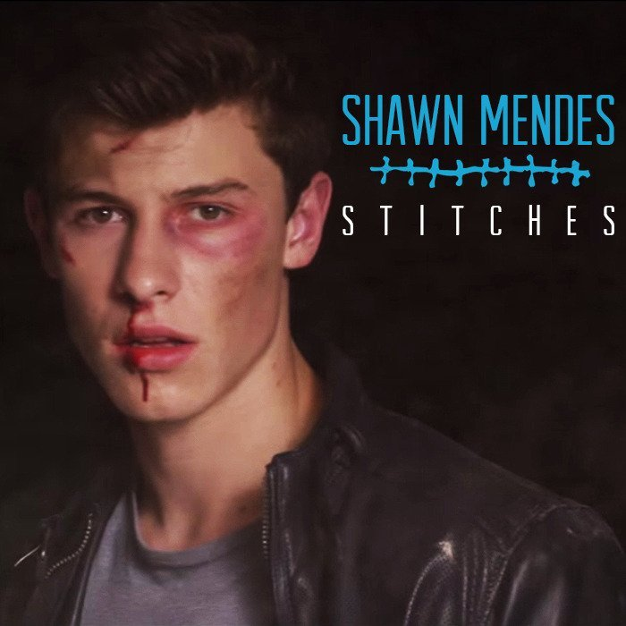

Comments
Gracias a esta clase, siento que he podido avanzar mi conocimiento sobre el mundo de la programacion, ademas, me ha ayudado a autosuperarme, e intentar ser una mejor version de mi :).
Stiches
Stiches(Shawn Mendes)
I thought that I've been hurt before
But no one's ever left me quite this sore
Your words cut deeper than a knife
Now I need someone to breathe me back to life
Got a feeling that I'm going under
But I know that I'll make it out alive
If I quit calling you my lover
Move on
You watch me bleed until I can't breathe
I'm shaking, falling onto my knees
And now that I'm without your kisses
I'll be needing stitches
Tripping over myself
Aching, begging you to come help
And now that I'm without your kisses
I'll be needing stitches
Just like a moth drawn to a flame
Oh, you lured me in I couldn't sense the pain
Your bitter heart cold to the touch
Now I'm gonna reap what I sow
I'm left seeing red on my own
Got a feeling that I'm going under
But I know that I'll make it out alive
If I quit calling you my lover
Move on
You watch me bleed until I can't breathe
I'm shaking, falling onto my knees
And now that I'm without your kisses
I'll be needing stitches
Tripping over myself
Aching, begging you to come help
And now that I'm without your kisses
I'll be needing stitches
Needle and the thread
Gotta get you outta my head
Needle and the thread
Gonna wind up dead

Happier than ever
Happier than ever(Billie Eillish)
When I'm away from you
I'm happier than ever
Wish I could explain it better
I wish it wasn't true, mm-hmm
Give me a day or two
To think of something clever
To write myself a letter
To tell me what to do, mm-hmm
Do you read my interviews? Or do you skip my avenue?
When you said you were passing through, was I even on your way?
I knew when I asked you to be cool about what I was telling you
You'd do the opposite of what you said you'd do
And I'd end up more afraid
Don't say it isn't fair
You clearly weren't aware that you made me miserable, ooh
So if you really wanna know
When I'm away from you (when I'm away from you)
I'm happier than ever (I'm happier than ever)
Wish I could explain it better (wish I could explain it better)
I wish it wasn't true, mm-hmm
You called me again, drunk in your Benz
Driving home under the influence
You scared me to death, but I'm wasting my breath
'Cause you only listen to your fucking friends
I don't relate to you
I don't relate to you, no
'Cause I'd never treat me this shitty
You make me hate this city
And I don't talk shit about you on the internet
Never told anyone anything bad
'Cause that shit's embarrassing, you were my everything
And all that you did was make me fucking sad
So don't waste the time I don't have
Don't try to make me feel bad
I could talk about every time that you showed up on time
But I'd have an empty line, 'cause you never did
Never paid any mind to my mother or friends, so I
Shut 'em all out for you 'cause I was a kid
You ruined everything good
Always said you were misunderstood
Made all my moments your own
Just fucking leave me alone
Problem
Problem(Ariana Grande)
Uh huh
It's Iggy Iggs
I got one more problem with you girl
(One less, one less problem)
Hey baby even though I hate ya
I wanna love ya
(I want you)
And even though I can't forgive you
I really want ya
(I want you)
Tell me, tell me baby
Why can't you leave me?
Cause even though I shouldn't want it
I gotta have it
(I want you)
Head in the clouds
Got no weight on my shoulders
I should be wiser
And realize that I've got
One less problem without ya
I got one less problem without ya
I got one less problem without ya
I got one less, one less problem
One less problem without ya
I got one less problem without ya
I got one less problem without ya
I got one less, one less problem
I know you're never gonna wake up
I gotta give up
(But it's you)
I know I shouldn't ever call back
Or let you come back
(But it's you)
Every time you touch me
And say you love me
I get a little bit breathless
I shouldn't want it
(But it's you)
Head in the clouds
Got no weight on my shoulders
I should be wiser
And realize that I've got
One less problem without ya
I got one less problem without ya
I got one less problem without ya
I got one less, one less problem
One less problem without ya
I got one less problem without ya (ooh, boy)
I got one less problem without ya (ooh)
I got one less, one less problem